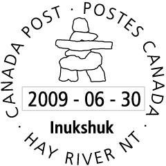

Hay River PO pictorial cancel
Inukshuk · Inushuk
- Status
- Expired
- Run dates
- 2009-01-01 to ?
- Design
- "Inukshuk"; inukshuk
- Ink colour
- Black
- Designer
- Unknown
- Post office
- Hay River PO
101 - 41 Capital Cres.
Hay River, NT
X0E 0R0 - Subjects
- inukshuk, first nation
This cancel is retired, so the post office can no longer apply it. Covers with it turn up from dealers and other collectors.
 Yellowknife Main POBlack
Yellowknife Main POBlack